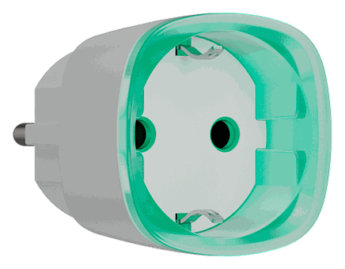

Gamme
Domotique
Automatismes, prises, relais, fuites d’eau et qualité de l’air : le confort dans la même application que la sécurité.

Scénarios dans l’application.
Prises, relais et interrupteurs Ajax réagissent à l’armement, à une alarme ou à une température. Les deux vidéos ci-dessous sont publiées par Ajax Systems.
Baseline vs Superior
Choisir le bon niveau.
La disponibilité Superior dépend des références et du projet. Orientation lors de l’étude gratuite.
Baseline · 3 références
L’essentiel, sans fil.
Large choix sans fil pour les besoins standards. Déploiement rapide, interface unique, évolutif : idéal pour démarrer et faire grandir votre système.
- Relais2 réf.
- Détecteurs de qualité de l'air1 réf.
Superior · 1 références
Pour les projets exigeants.
Sans fil et/ou filaire, multi-zones, sites sensibles : options avancées selon les références. Sur étude Active Sécurité 974, partenaire agréé Ajax Systems.
- Relais1 réf.
Baseline
Sélection du catalogue AS974.


Superior
Pour aller plus loin.

Prêt à sécuriser votre espace ?
Étude et devis gratuits, sans engagement. Intervention chez vous, partout à La Réunion.